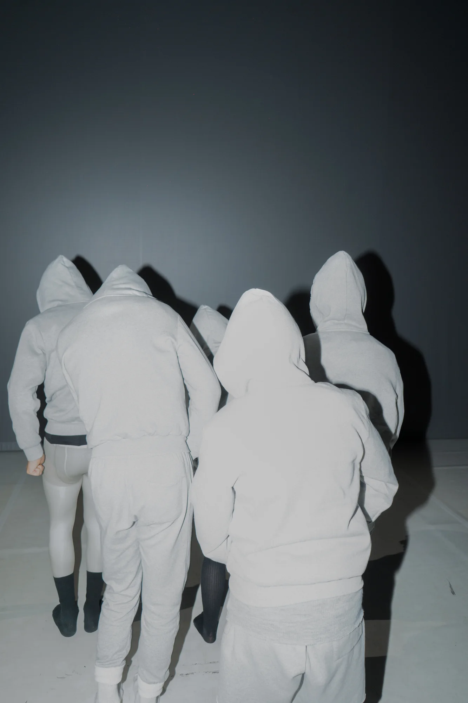
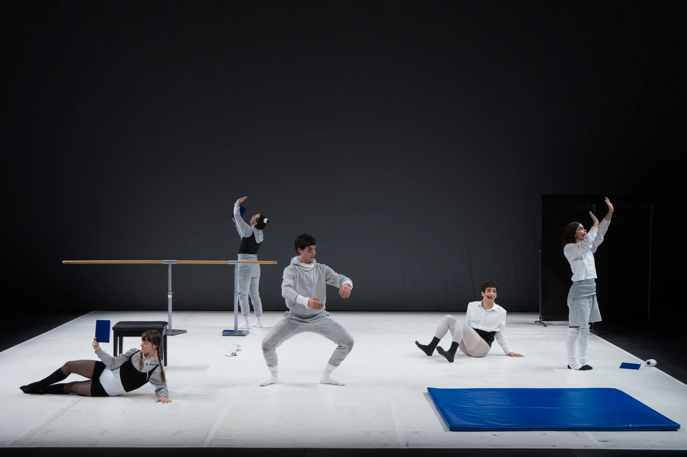

NAVAJA (2024)
pieza escénica / laSADCUM
NAVAJA presenta un autorretrato escénico sobre poéticas sexoafectivas en el autoaprendizaje dictado por el algoritmo en la adolescencia SADCUM. Cinco personajes denominados LOINKS emprenden un (no)viaje de tres actos, enmarcados en una demo abandonada a medio programar.
- Premio a Mejor Eespectáculo en los premios DansaCat 2024
- Premio del Jurado a mejor pieza en el festival Pedra Viva 2024
- Autoría
- laSADCUM
- Dirección
- Guillem Jiménez
- Asistencia de dirección
- Vera Palomino
- Coreografía
- Guillem Jiménez en colaboración con lxs intérpretes
- Interpretación
- Judit Amengual, Laia Camps, Guillem Jiménez, Wilchaan Roy, Javi Valls
- Composición musical
- Alejandro Da Rocha, Guillem Jiménez
- Colaboración musical
- Tarta Relena
- Diseño de iluminación
- Oscila
- Diseño de vestuario
- Gina Berenguer
- Escenografía
- Oriol Corral
- Maquillaje
- Juan Galo
- Montaje Audiovisual
- Alan Gomis, Guillem Jiménez
- Producción
- Lila Brick (Muntsa Roca), Blanca Sartorius
- Asesoramiento artístico
- Roberto Fratini, Juan Carlos Lérida
- Coproducción
- Dansa Metropolitana
- Con la colaboración de
- Paral·lel 62
- Con el apoyo de
- El Corralito CCA (TNT’23), Fabra i Coats (Fábrica de creación), Laboratorio Escénico (CCCB), Generalitat de Catalunya y Estruch (Fàbrica de creació de les arts en viu).
Fotos: Alan Gomi




